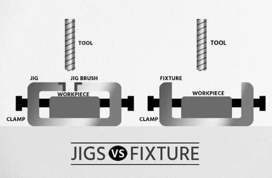
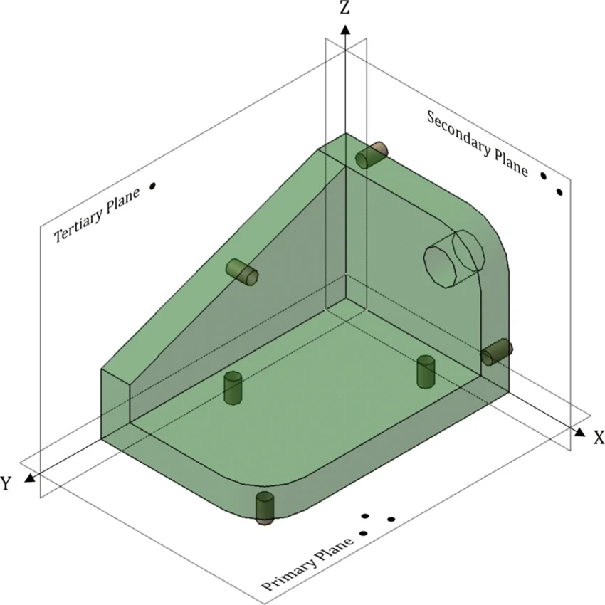

🌙
📚 Sub-Module Nav:
[Hub Home]
1. Metal Cutting
2. Machine Tools
3. Metrology
4. NC/CNC
5. Jigs & Fixtures Guide
5b. Jigs & Fixtures MCQ Grind
6. EDM/ECM/USM
JIGS AND FIXTURES
High-frequency topics: Jig vs Fixture definition & tool guidance, 3-2-1 location
principle, clamping force direction, Diamond Pin locator, V-block 90° angle, fool-proofing design rules.
1. Core Concepts & Definitions
1.1 Jig (Most-Tested Definition)
Jig = Device that locates + clamps + guides the tool
The defining feature of a jig is tool guidance . It positions the tool relative to
the workpiece through bushings, guides, or templates.
1.2 Fixture
Fixture = Device that locates + clamps only
A fixture rigidly holds the workpiece but relies on the machine tool's inherent accuracy. Common in operations
requiring higher cutting forces.

Figure 1.1: Jig vs Fixture — Jig Guides the Cutting Tool via Bushings, Fixture Locates and Clamps Only.
1.3 Key Distinction in Exams
Turning does NOT use a jig — fixtures are used instead because lathe already
positions the tool.Jigs are associated with light-duty operations (drilling, reaming, tapping).
Fixtures are associated with heavy-duty or precision operations.
1.4 3-2-1 Location Principle (Most-Tested Principle)
3-2-1 Rule for Workpiece Location:
Removes all 6 degrees of translational and rotational freedom.
Locators should be positioned as far apart as possible for maximum stability.
Redundant location (more than 6 points) creates over-constraint and must be avoided.
Over-constraint causes workpiece distortion or damage during clamping.

Figure 1.2: 3-2-1 Principle of Workpiece Location — 3 Points Primary Datum, 2 Points Secondary, 1 Point Tertiary (Constraining 6 Degrees of Freedom).
2. Essential Formulas & Principles
2.1 Clamping Force Direction Rule (Exam-Critical)
Clamping force direction MUST OPPOSE cutting force direction
2.2 Minimum Clamps Rule
Use minimum number of clamps to maintain workpiece stability
2.3 Locator Spacing Rule
Locators (support points) should be positioned at maximum distance apart
2.4 Fool-Proofing Definition (Frequently Tested)
Fool-proofing ≠ error-free calculationsprevents incorrect loading physically
2.5 Quick-Acting Clamp Principle
Quick-acting clamps reduce cycle time in production environments
3. Classification of Locating & Clamping Devices
3.1 Locating Devices (Position Workpiece)
Device
Application / Workpiece Type
Function / Unique Feature
Exam Note
V-Block Cylindrical workpieces (rods, shafts, pipes)
Two angled surfaces locate cylinder on two points; centers workpiece automatically
V-angle typically 90°
Diamond Pin Two holes with variation in center distance
One pin is fixed; one pin allows radial movement to accommodate variation
Locator only, NOT a clamp ; frequently tested
Plate Locator Flat surfaces (rectangular workpieces)
Flat surface; may have adjustable feet or springs
Primary datum support
Rest Pad / Spherical Locator Curved or irregular surfaces
Contacts at single point; adjustable for surface variations
Reduces contact stress
Pin Locator Holes (vertical positioning)
Cylindrical or conical pin fits into hole to locate vertically
Part of 3-2-1 arrangement
3.2 Clamping Devices (Hold Workpiece)
Device
Type / Mechanism
Characteristics
Exam Note
Strap Clamp Lever-based, simple design
Low cost; manual operation; simple mechanical advantage
Strap clamp is a locator — FALSE; it is purely a clamping device.
Frequently tested false statement.
Quick-Acting Clamp Toggle or cam-based
Fast engagement/disengagement; high clamping force with minimal effort
Preferred in production; reduces cycle time
Screw Clamp Lead-screw based
Slow but powerful; precise force control; manual or motorized
Used when high consistent force is needed
Pneumatic/Hydraulic Clamp Fluid-powered
Automatic; repeatable force; suitable for high-volume production
Integrated with automated systems
Toe Clamp Cam or lever with toe extension
Applies force from side; useful when top access is restricted
Variant of quick-acting clamp
4. Key Points to Remember
Jigs guide the tool; fixtures do not. This distinction decides 90% of jig vs
fixture MCQs.Turning uses fixtures, not jigs. Turning is a heavy-duty operation where the
lathe itself positions the tool.3-2-1 location principle removes 6 degrees of freedom: 3 points fix primary
plane, 2 points fix secondary plane, 1 point fixes tertiary plane.Redundant location must be avoided. Using more than 6 locating points causes
over-constraint, workpiece distortion, and clamping difficulties.Clamping force direction opposes cutting force. If clamping force is parallel to
cutting force, the workpiece may lift or shift during machining.Diamond pin is a locator, NOT a clamp. It accommodates center distance
variation in two-hole systems. This is a popular trap in MCQs.V-block locates cylindrical workpieces. Typical 90° V-angle; automatically
centers the cylinder on two contact points.Strap clamp is a simple, low-cost clamping device. It is NOT a locator and does
NOT provide location — it only holds after location is established.Quick-acting clamps reduce cycle time. Lever, toggle, or cam-based; preferred
in high-volume batch production to minimize setup and loading time.Minimum clamps should be used. Only the minimum number needed to maintain
stability — reduces cost, speeds operation, and prevents over-constraint distortion.Fool-proofing prevents incorrect loading. It is NOT error-free calculations;
it is physical design (asymmetric pins, stops, guides) that makes wrong insertion impossible.Jigs improve speed; fixtures improve rigidity. Jigs reduce marking and
measuring time; fixtures handle heavy cutting forces without deflection.Locators should be positioned far apart. Maximum spacing increases moment arm,
reduces deflection under cutting forces, and improves workpiece stability.Chip removal must be easy by design. Jigs and fixtures must allow chips to
fall freely; blocking chip flow damages workpiece and tool.High initial cost is the primary disadvantage. Jigs and fixtures improve
productivity and accuracy but require significant upfront investment in design and manufacturing.
Revision Focus Areas (Frequency-Ranked):
🌛